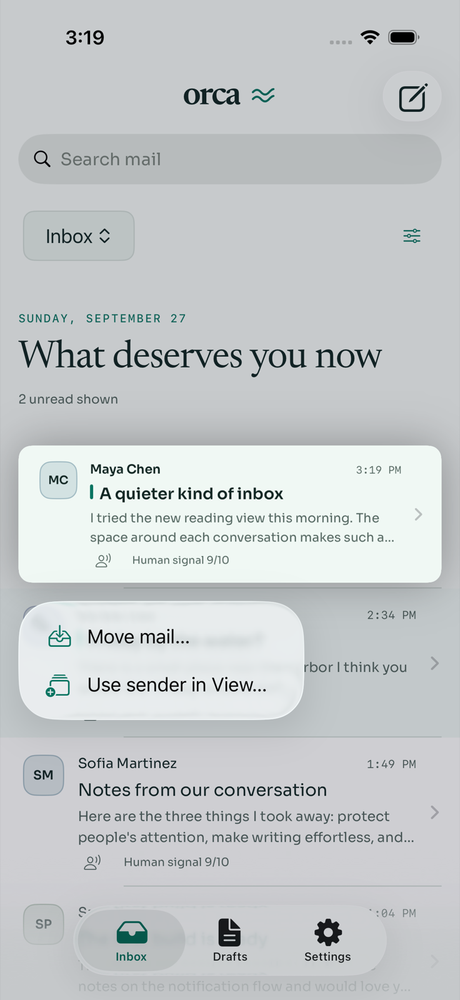
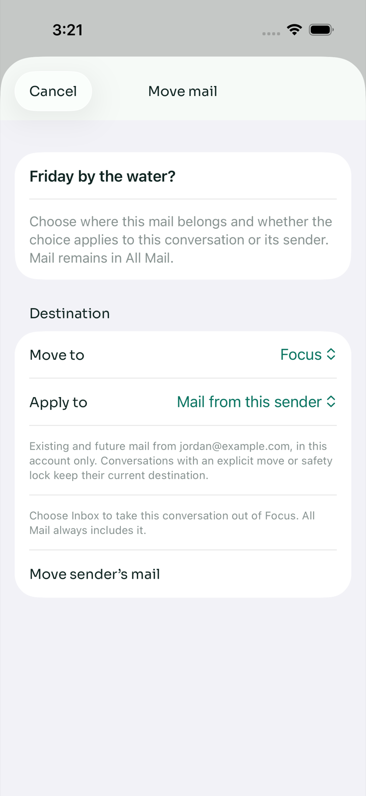
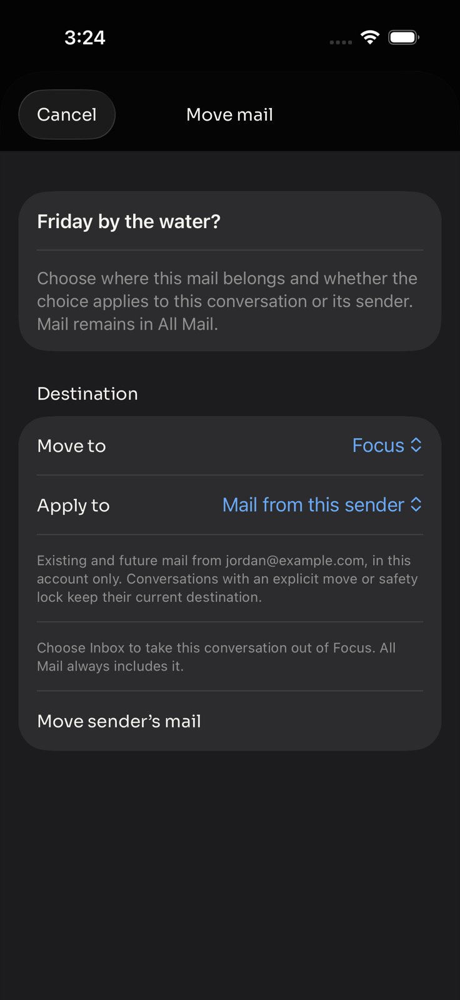
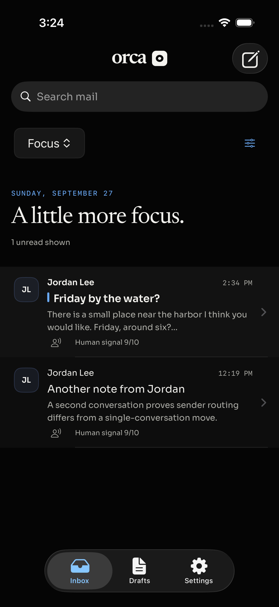
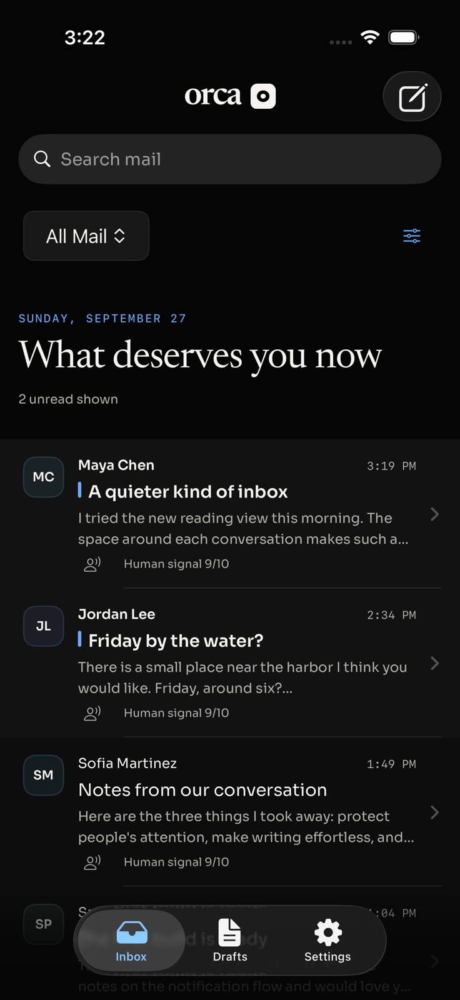
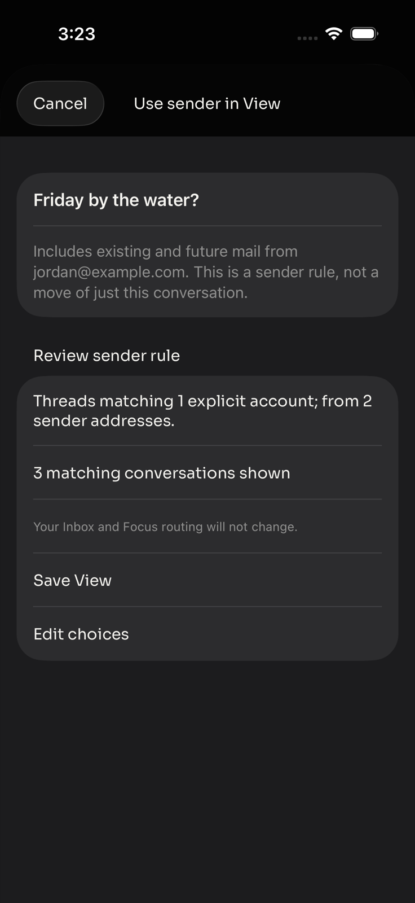

Native SwiftUI · iOS Simulator
Long-press an Inbox, Focus, All Mail, destination, or saved-View row. Choose Move mail…, select a destination, and choose Just this conversation or Mail from this sender before confirming.
| Choice | Effect |
|---|---|
| Just this conversation | Moves the selected account/thread only, including its replies. Other conversations from the sender are unchanged. |
| Mail from this sender | Sets a sender-address routing rule within the selected account, for existing and future mail. Explicit conversation moves and safety locks retain precedence; the sheet explains this. |
| All Mail | Remains an aggregate, not a move destination. Mail stays available here after either kind of move. |
| Use sender in View… | Creates a sender-based saved View or adds the sender to a compatible existing View. Preview and confirmation are required; unsupported existing definitions are rejected by the server without rewriting them. This is sender-wide, not individual-conversation membership. |
Passed: 40 native unit tests and both end-to-end action flows in light and dark mode (4 UI runs). Dedicated iPhone 17 Pro Simulator, iOS 26.3.1; real API routes backed by an isolated synthetic mailbox. API typecheck and diff whitespace checks also passed. No personal mailbox or mail-provider writes.






bun apps/api/scripts/mobile-fixture.ts # Use the connection.json path printed by the isolated fixture: ORCA_UI_TEST_SCOPE=actions apps/ios/OrcaUITests/run-fixture-tests.sh \ /path/to/connection.json SIMULATOR_UDID /tmp/OrcaLongPressDerived
The harness builds the native app, drives long presses and actions through XCTest, runs light and dark appearances, and retains screenshots in its result bundles. Sanitized routing requests show exact conversation/sender scope and account IDs.
Base: 65fca0c · Branch: feat/ios-mail-long-press. Physical-device behavior and TestFlight distribution are not covered by this Simulator run.